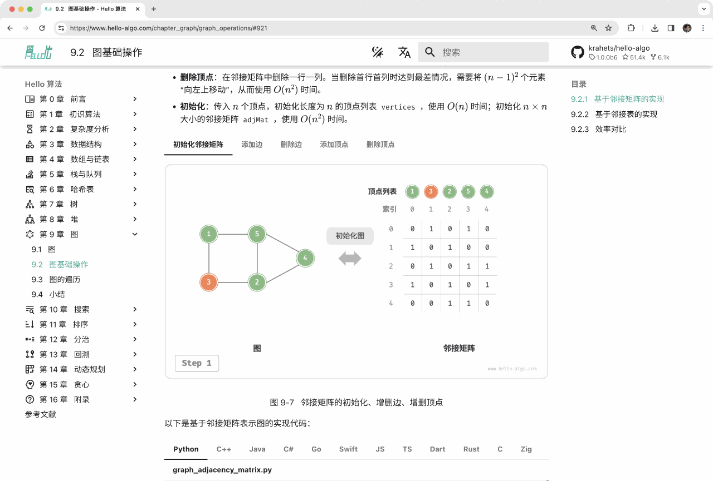
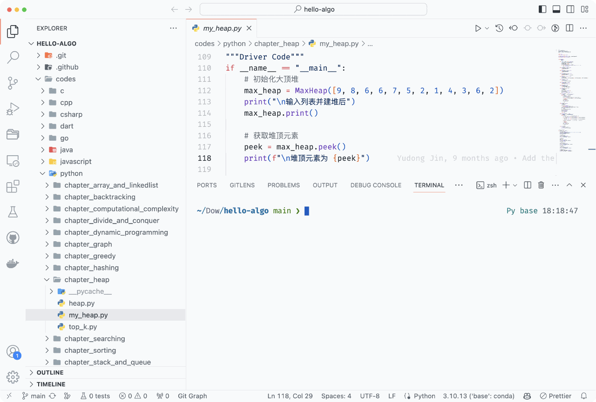
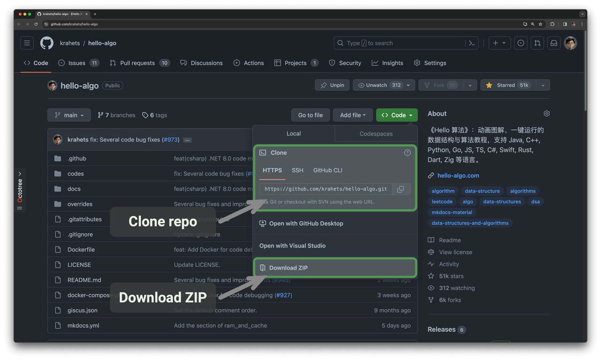
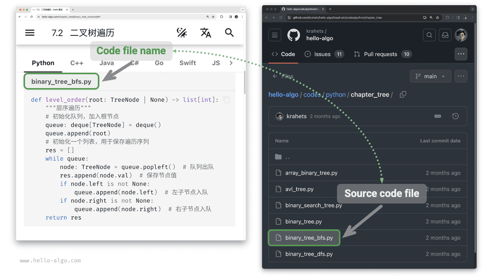
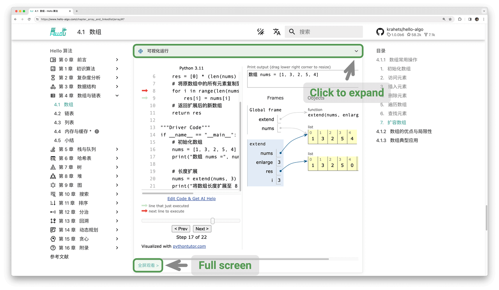
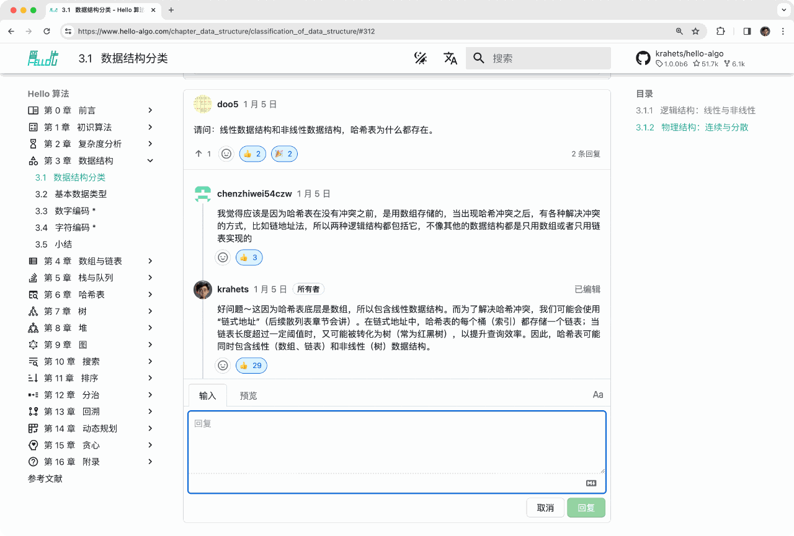
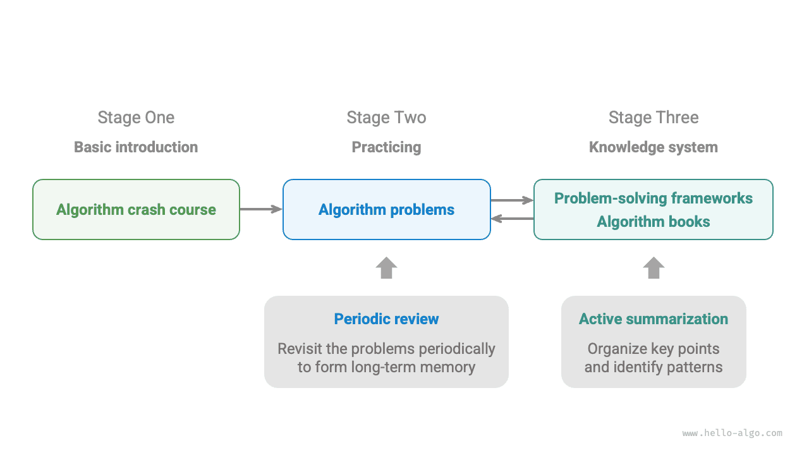

المقدمة
كيف تستخدم هذا الكتاب
للحصول على أفضل تجربة قراءة، يُوصى بقراءة هذا القسم كاملاً.
اصطلاحات أسلوب الكتابة
- الأقسام المعلَّمة بعلامة
*بعد عنوانها اختيارية وأكثر صعوبة بعض الشيء. وإذا كان وقتك ضيقاً، يمكنك تخطيها في القراءة الأولى. - تظهر المصطلحات التقنية بالخط العريض (في النسختين المطبوعة وPDF) أو تحتها خط (في النسخة الإلكترونية)، مثل المصفوفة. ويستحق تذكّرها، إذ تساعدك عند قراءة الأدبيات التقنية.
- سيُوضع بالخط العريض المحتوى الأساسي والعبارات الملخِّصة، ويستحق هذا النص اهتماماً خاصاً.
- ستُوضع الكلمات والعبارات ذات المعاني المحددة بين "علامات اقتباس" لتجنب الغموض.
- عندما تختلف المصطلحات بين لغات البرمجة، يتبع هذا الكتاب اصطلاحات Python؛ فعلى سبيل المثال يستخدم
Noneللتعبير عن «العدم». - يخفف هذا الكتاب جزئياً من أساليب التعليقات التقليدية في لغات البرمجة لصالح تصميم أكثر إيجازاً. وتنقسم التعليقات أساساً إلى ثلاثة أنواع: تعليقات العنوان، وتعليقات المحتوى، والتعليقات متعددة الأسطر.
Go
/* تعليق العنوان، يُستخدم لوسم الدوال والأصناف وحالات الاختبار وغيرها */
// تعليق المحتوى، يُستخدم لشرح الشيفرة بالتفصيل
/**
* تعليق
* متعدد الأسطر
*/
TypeScript
/* تعليق العنوان، يُستخدم لوسم الدوال والأصناف وحالات الاختبار وغيرها */
// تعليق المحتوى، يُستخدم لشرح الشيفرة بالتفصيل
/**
* تعليق
* متعدد الأسطر
*/
التعلم بكفاءة عبر الرسوم التوضيحية المتحركة
مقارنةً بالنص المجرد، تحمل الفيديوهات والصور كثافة معلومات أعلى وبنية أوضح، ما يجعلها أسهل فهماً. وفي هذا الكتاب، تُعرض المفاهيم الأساسية والموضوعات الصعبة أساساً عبر رسوم توضيحية متحركة، ويؤدي النص دور الشرح والتكميل.
إذا صادفت أثناء قراءة هذا الكتاب رسماً توضيحياً متحركاً كالمعروض أدناه، فاعتبر الرسم التوضيحي أصلاً والنص تكميلاً، واستخدمهما معاً لفهم المحتوى.

تعميق الفهم عبر التطبيق البرمجي
تُستضاف شيفرة هذا الكتاب المرافقة في مستودع GitHub. وكما يوضح الشكل أدناه، تأتي الشيفرة المصدرية مزودة بحالات اختبار ويمكن تشغيلها بنقرة واحدة.
إذا سمح الوقت، يُوصى بأن تكتب الشيفرة بنفسك. وإذا كان وقت دراستك محدوداً، فيرجى على الأقل قراءة جميع الشيفرة وتشغيلها.
ومقارنةً بقراءة الشيفرة فحسب، فإن كتابتها بنفسك كثيراً ما تعود بفائدة أكبر. فالتطبيق العملي هو حيث يحدث التعلم الحقيقي.

يتضمن تشغيل الشيفرة أساساً ثلاث خطوات تمهيدية.
الخطوة 1: تثبيت بيئة البرمجة المحلية. يرجى اتباع البرنامج التعليمي في الملحق. وإذا كانت مثبتة بالفعل، يمكنك تخطي هذه الخطوة.
الخطوة 2: استنساخ مستودع الشيفرة أو تنزيله. قم بزيارة مستودع GitHub. وإذا كنت قد ثبّت Git بالفعل، يمكنك استنساخ هذا المستودع بالأمر التالي:
git clone https://github.com/krahets/hello-algo.git
بدلاً من ذلك، يمكنك النقر على زر "تنزيل ZIP" المعروض أدناه لتنزيل أرشيف ZIP للمستودع مباشرةً ثم فك ضغطه محلياً.

الخطوة 3: تشغيل الشيفرة المصدرية. وكما يوضح الشكل أدناه، بالنسبة إلى كتل الشيفرة التي تحمل أسماء ملفات في أعلاها، يمكننا العثور على ملفات الشيفرة المصدرية المقابلة في مجلد codes في المستودع. ويمكن تشغيل ملفات الشيفرة المصدرية بنقرة واحدة، ما يساعدك على توفير وقت تصحيح الأخطاء غير الضروري ويتيح لك التركيز على محتوى التعلم.

بالإضافة إلى تشغيل الشيفرة محلياً، تدعم النسخة الإلكترونية أيضاً التنفيذ المرئي لشيفرة Python (منفَّذ استناداً إلى pythontutor). وكما يوضح الشكل أدناه، يمكنك النقر على زر "التشغيل المرئي" أسفل كتلة الشيفرة لتوسيع العرض ومراقبة عملية تنفيذ شيفرة الخوارزمية؛ ويمكنك أيضاً النقر على زر "عرض ملء الشاشة" للحصول على تجربة مشاهدة أفضل.

النمو معاً عبر الأسئلة والمناقشات
عند قراءة هذا الكتاب، يرجى ألا تتخطى النقاط التي لم تفهمها فهماً كاملاً بعد. لا تتردد في طرح أسئلتك في قسم التعليقات، وسأبذل أنا وأصدقائي جهدنا للإجابة عنها، عادةً خلال يومين.
وكما يوضح الشكل أدناه، تحتوي النسخة الإلكترونية على قسم تعليقات في أسفل كل فصل. وأشجعك على إيلاء اهتمام وثيق للمناقشات هناك. فمن جهة، يمكنك أن تتعرف على المشكلات التي يواجهها الآخرون، فتسدّ بذلك ثغرات في فهمك وتحفّز تفكيراً أعمق. ومن جهة أخرى، آمل أن تجيب بسخاء عن أسئلة القراء الآخرين، وتشارك أفكارك، وتساعد الآخرين على التحسن.

خارطة طريق تعلم الخوارزميات
إجمالاً، يمكننا تقسيم عملية تعلم بنى البيانات والخوارزميات إلى ثلاث مراحل.
- المرحلة 1: مقدمة في الخوارزميات. نحتاج إلى التعرف على خصائص مختلف بنى البيانات واستخداماتها، وتعلم مبادئ الخوارزميات المختلفة وعملياتها ووظائفها وكفاءتها.
- المرحلة 2: التدرب على مسائل الخوارزميات. يُوصى بالبدء بالمسائل الشائعة وحل 100 مسألة منها على الأقل أولاً، حتى تألف أسئلة الخوارزميات السائدة. وعندما تبدأ التدرب على المسائل، قد يبدو «نسيان المعرفة» تحدياً، لكن اطمئن، فهذا أمر طبيعي جداً. ويمكننا مراجعة المسائل وفق «منحنى النسيان لإبينغهاوس»، وبعد 3-5 جولات من التكرار، تثبت عادةً في الذاكرة بثبات. أما قوائم المسائل الموصى بها وخطط التدرب، فيرجى الاطلاع على مستودع GitHub هذا.
- المرحلة 3: بناء نظام معرفي. من حيث التعلم، يمكننا قراءة مقالات أعمدة الخوارزميات، وأطر حل المسائل، والكتب المدرسية في الخوارزميات لإثراء نظامنا المعرفي باستمرار. ومن حيث التدرب على المسائل، يمكننا تجربة استراتيجيات متقدمة لحل المسائل، مثل التصنيف حسب الموضوع، ومسألة واحدة بحلول متعددة، وحل واحد لمسائل متعددة، وغيرها. ويمكن العثور على رؤى حل المسائل ذات الصلة في مجتمعات متنوعة.
وكما يوضح الشكل أدناه، يغطي محتوى هذا الكتاب أساساً «المرحلة 1»، ويهدف إلى مساعدتك على إنجاز تعلم المرحلتين 2 و3 بكفاءة أكبر.
